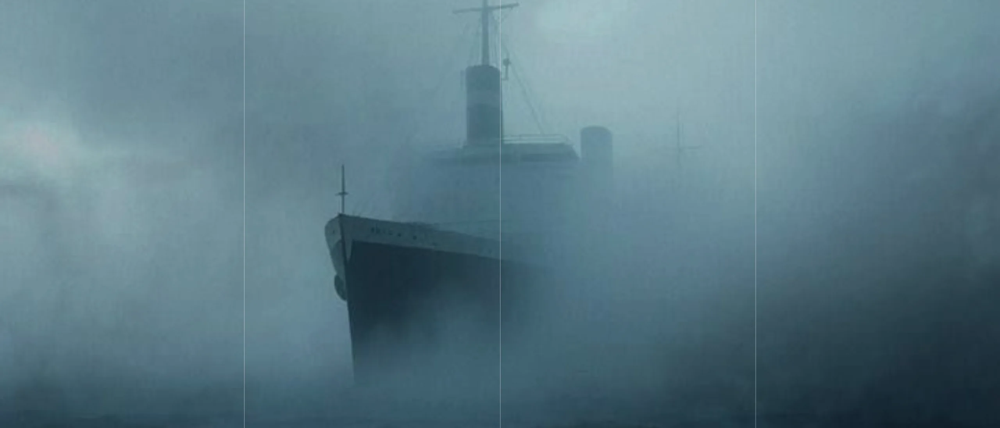
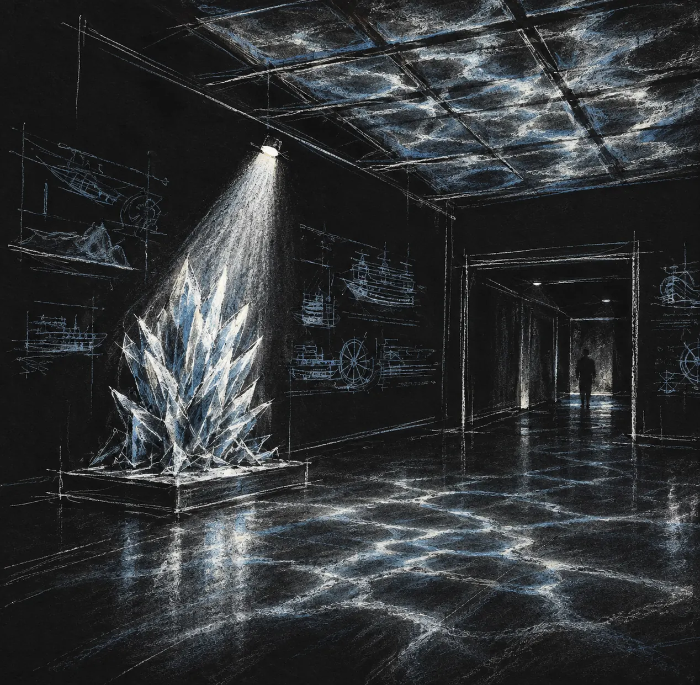
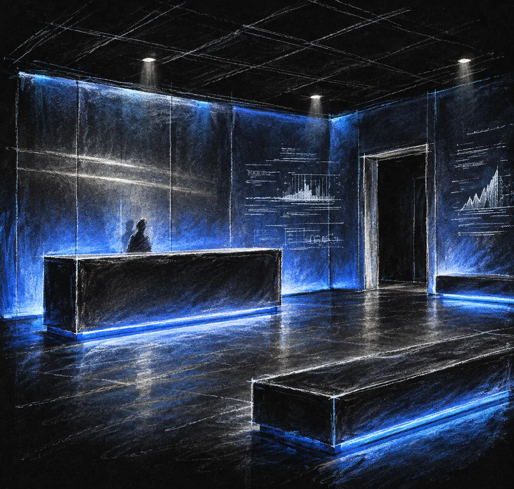
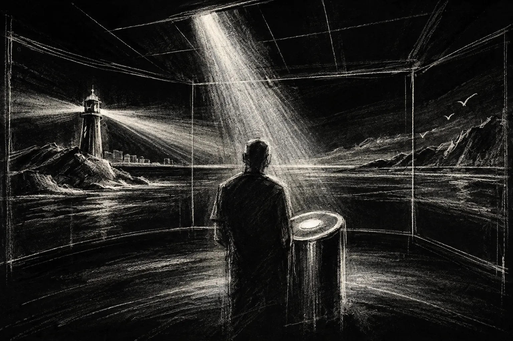
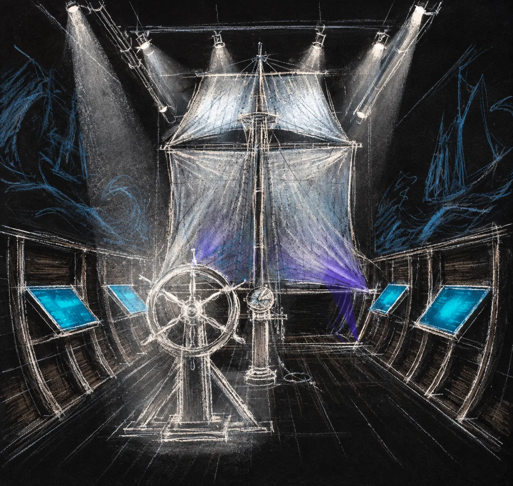
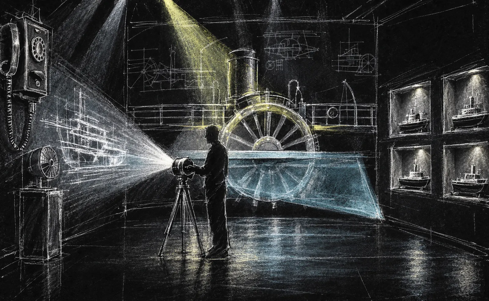
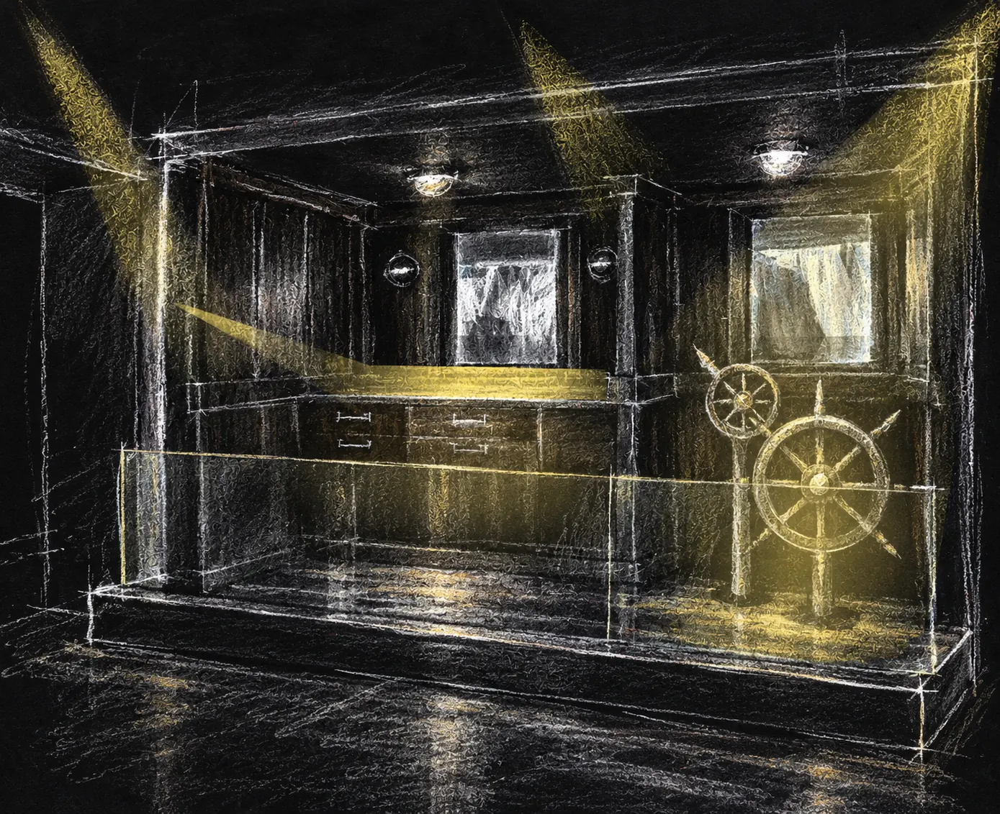
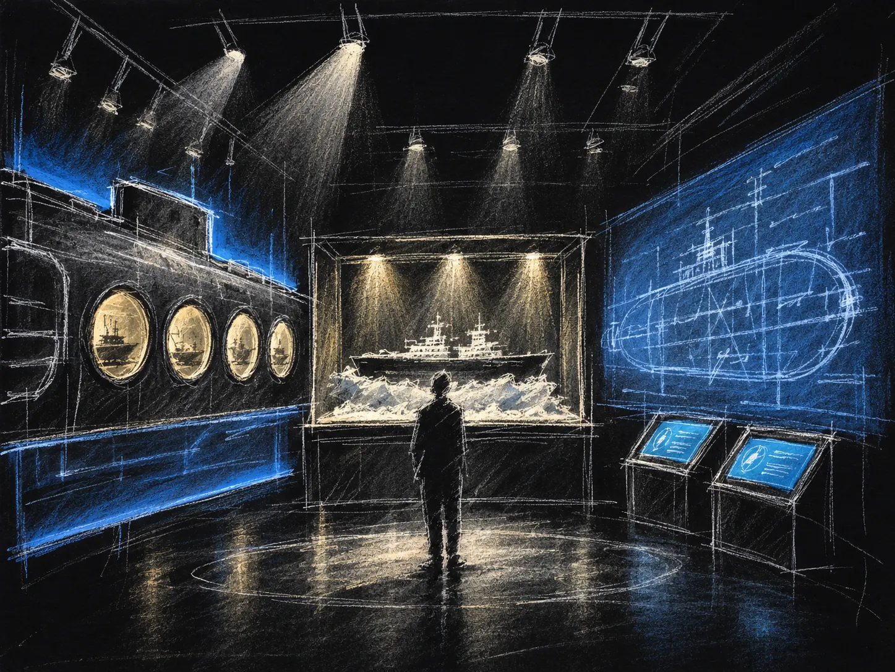
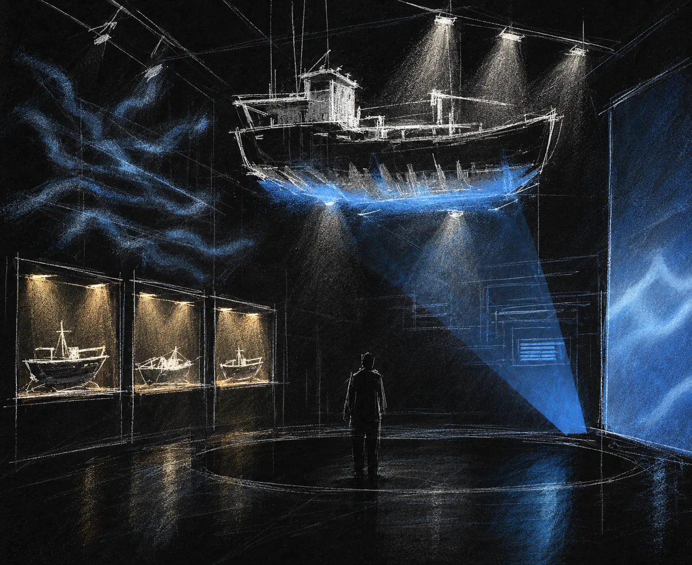
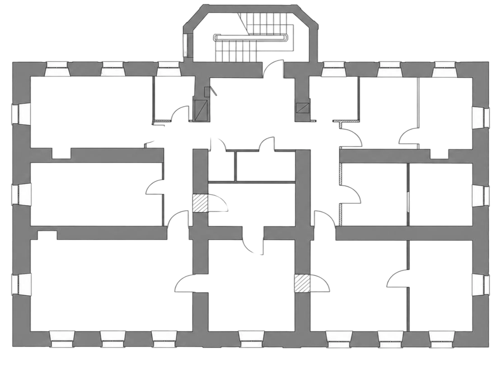

01 / дипломный проект / 2026Музей о мореИсследовать маршрут ↓01—08 / состояния моряМаршрутпогруженияНаводите на точки плана или выбирайте кадры — изображение зала появится в центре.01Входная группа02Ресепшен03Маяк04Парус05Паровой мотор06Рубка «Литке»07Подлодка08Атом01 / 08Входная группаИзогнутые металлические пластины на потолке и узкий направленный луч создают на полу динамическое переотражение света.План экспозицииВыберите зал12345678Следующий проектКресты↗